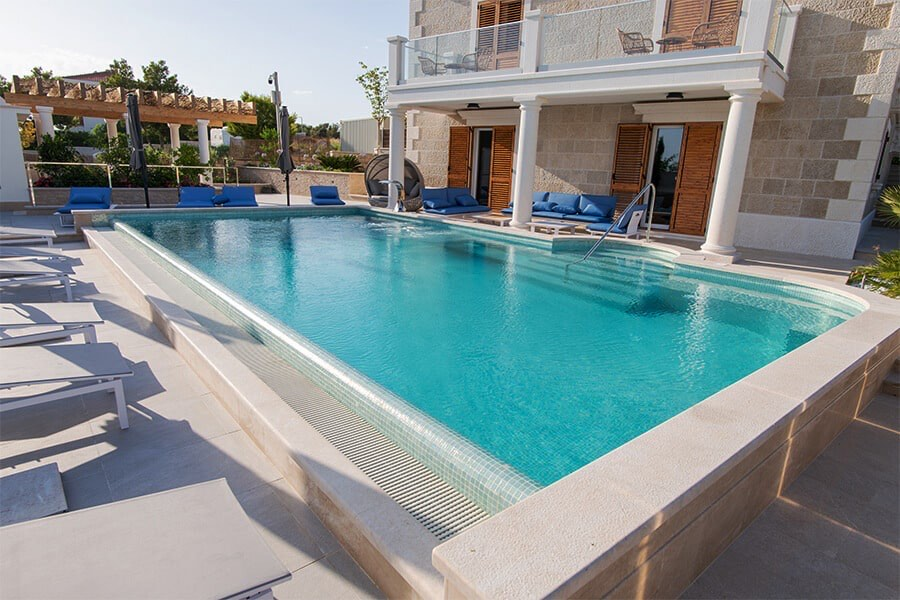
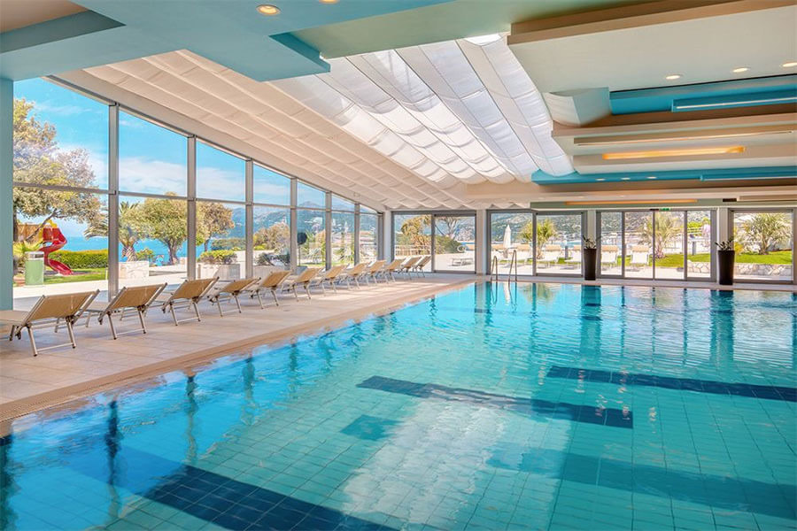

Sredstva za njegu vode
Klor u tabletama i granulama, multifunkcijske tablete, algicid, flokulant te pH minus i pH plus granulat.
Onečišćenje vode nije jedini problem. Veći su problem kvarovi na opremi koji nastaju zbog lošeg održavanja. Zato nudimo dnevno, tjedno, mjesečno ili godišnje održavanje bazena.

Usluga održavanjaDanašnji tempo života ne ostavlja mnogo vremena za čišćenje, kontrolu rada opreme i kontrolu kvalitete vode. K.G.B. instalacije nude dnevno, tjedno, mjesečno ili godišnje održavanje bazena.
Da bi voda zadovoljila zakonom propisane uvjete, uz filtraciju se mora i kemijski tretirati. Kemijski tretman moguć je ručno ili automatski.
Klor u tabletama i granulama, multifunkcijske tablete, algicid, flokulant te pH minus i pH plus granulat.
Elektroliza (tretman vode pomoću soli), UV Blue Lagoon (dezinfekcija ionima bakra i UV lampom) te automatska regulacija pH i klora.
Za kućne bazene imamo više tipova robota proizvođača Zodiac. Većina čisti podove i zidove, a razlikuju se po kapacitetu i vremenu čišćenja.
 pH 7,0 – 7,4
pH 7,0 – 7,4Najčešći problemi s bazenskom vodom i koraci koje preporučujemo. Ako ne pomogne, nazovite nas.
Uzrok: premalo dezinfekcijskog sredstva ili neprimjerena pH vrijednost.
Rješenje: pod i zidove dobro očistite četkom, uravnotežite pH na 7,0 – 7,4, izvedite šok kloriranje, ponovno provjerite pH i po potrebi dodajte flokulant.
Uzrok: izlučivanje kamenca zbog previsoke pH vrijednosti ili velike karbonatne tvrdoće vode.
Rješenje: kod manjih naslaga dodajte sredstvo protiv kamenca. Kod tvrdokornih naslaga ispraznite bazen i obloge očistite kiselim sredstvom, pazeći da ne oštetite bazensku foliju.
Uzrok: previsoka ili preniska pH vrijednost. Korozija može uzrokovati izlučivanje metalnih oksida i kamenca.
Rješenje: pH stalno držite u neutralnom području (7,0 – 7,4) i kontrolirajte tvrdoću vode.
Uzrok: neodgovarajući algicid, ostaci tekućine za prezimljavanje ili sredstava za čišćenje.
Rješenje: koristite algicid koji ne pjeni, a nakon temeljitog čišćenja bazen dobro isperite čistom vodom. Ako pjenjenje ne prestaje, dolijte svježu vodu.
Uzrok: izlučivanje željeza ili bakra, obično kad se bazen napuni vodom s izvora ili rijeke. I voda iz vodovoda može imati više željeza i mangana.
Rješenje: podignite pH iznad 7,5, dodajte sredstvo za vezanje metala i pustite filter da radi 48 sati. Zatim snizite pH na 7,0 – 7,4 i dodajte flokulant.
Uzrok: plutajuće ili mikronske čestice koje filter ne može zadržati.
Rješenje: uravnotežite pH na 7,0 – 7,4, izvedite šok kloriranje, ponovno provjerite pH i dodajte flokulant. Provjerite cirkulira li voda pravilno i je li sredstvo ravnomjerno raspoređeno.
Specijalizirani smo i za strojarske instalacije, opremu i uređaje za grijanje, hlađenje, klimatizaciju, ventilaciju i automatsku regulaciju. Imamo certifikate za montažu i servis najpoznatijih proizvođača opreme.
Energetski najpovoljniji način grijanja i hlađenja bazenske vode.
Odvajaju višak vlage iz prostora. Obavezni su u prostoru zatvorenih bazena.
Mijenjaju ustajali zrak svježim i pritom prenose toplinu, za uštede energije. Za prostore s mnogo ljudi i zatvorene bazene.
Centralna priprema zraka: grijanje, hlađenje, filtracija, vlaženje, sušenje, rekuperacija i regeneracija.
Energiju zemlje, vode ili zraka pretvaraju u toplinu: oko 25 % struje daje 100 % korisne topline.
Otvoreni apsorberi za grijanje bazena i zatvoreni sustavi za bazen, vodu za kućanstvo i grijanje prostora.

Wellness